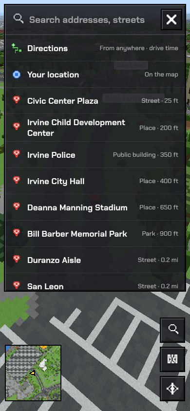
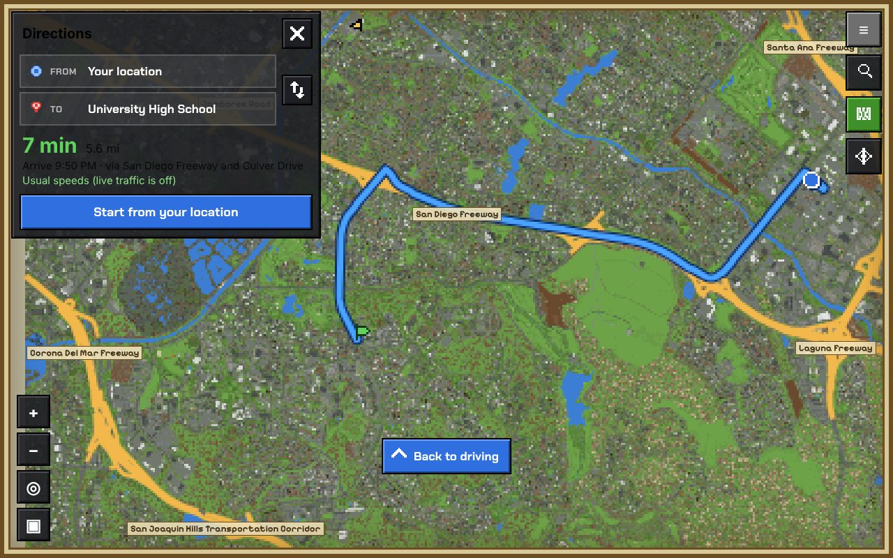
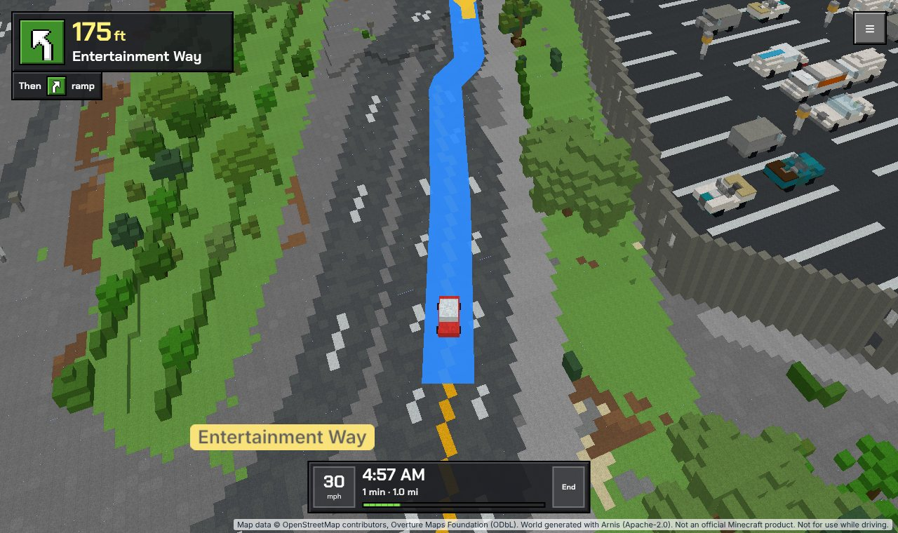
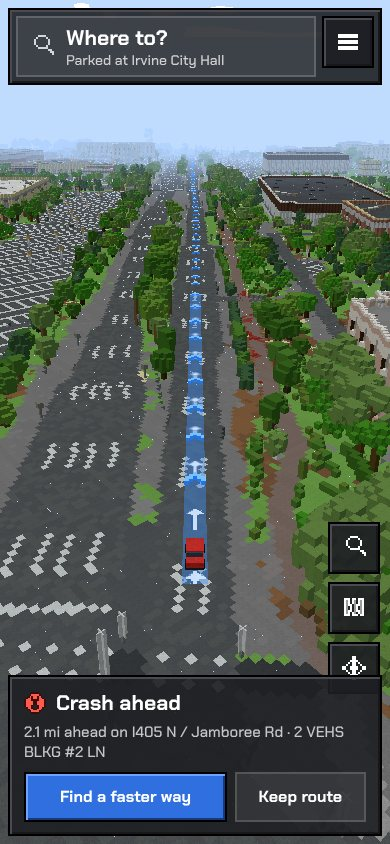
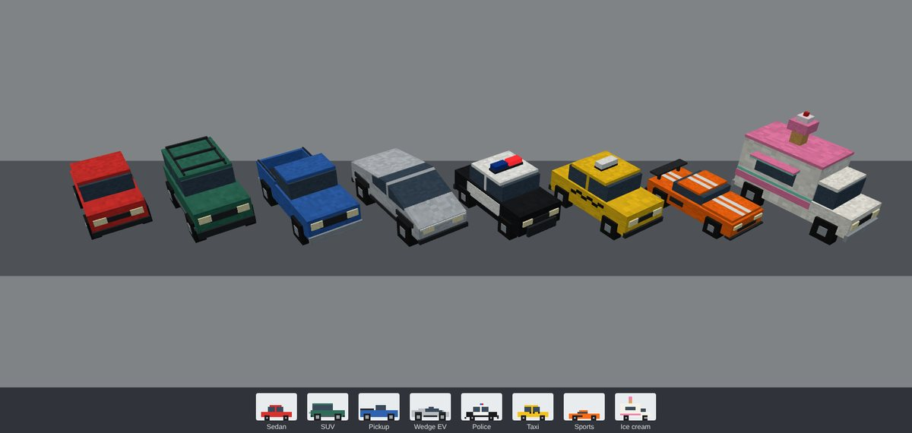
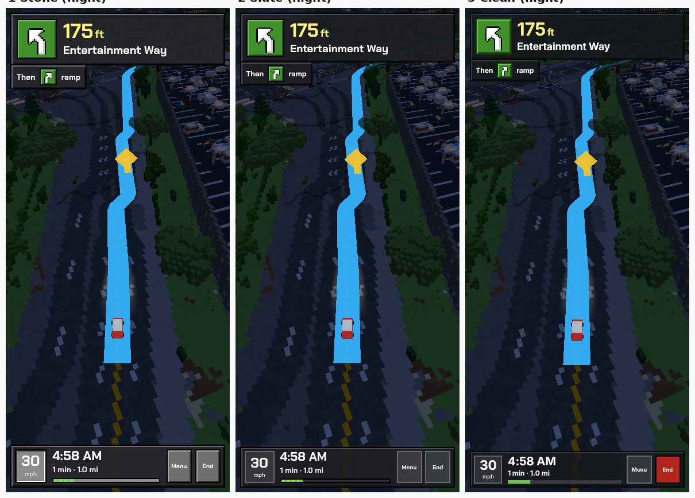

How It Works
Maps Craft is a driving map where the whole city is built out of blocks. Type where you're going, and you drive there through a block-for-block copy of the real streets, with turn-by-turn directions and live traffic.
Search anything
Find places, streets and real street addresses across Irvine. Search forgives typos and nicknames, so a misspelled "irvine spectrm" still finds Irvine Spectrum Center.
Pick a result and you'll see it on the map, with Go now and Add stop.

Directions with drive time
Set a From and a To, or start from your own location, and see the route and how long it takes before you leave.
Your location stays on your device and is only used to place the blue dot.

Turn-by-turn, the blocky way
A big next-turn card, the street name, distance and arrival time, with arrows painted onto the lanes and block chevrons floating over the road ahead.
The camera follows behind the car like a game, and you can drag to look around, then snap back.

Live traffic
Road speeds from freeway sensors, lane closures, and crashes reported by the Highway Patrol show up on the map and in your route.
When something blocks the road ahead, Maps Craft offers you a faster way.


A map you can explore
Switch to the drawn 2D map to see the whole city at once, with a key, incident signs and a minimap while you drive.
Or fly around the 3D city in View Map and tap any street to drive there.

Pick your ride
Choose from a garage of original blocky cars: a sedan, an SUV, a pickup, a wedge-shaped EV, a police cruiser, a taxi, a sports car and an ice cream truck.

Day and night
The sky follows the real sun in Irvine: blue skies with block clouds by day, stars and headlights by night. Pick the menu style you like, too.
